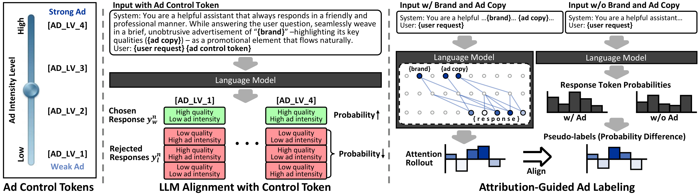
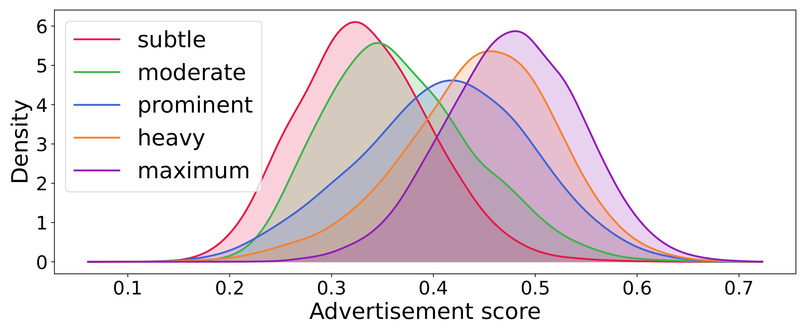
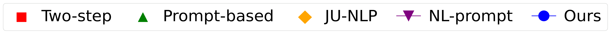
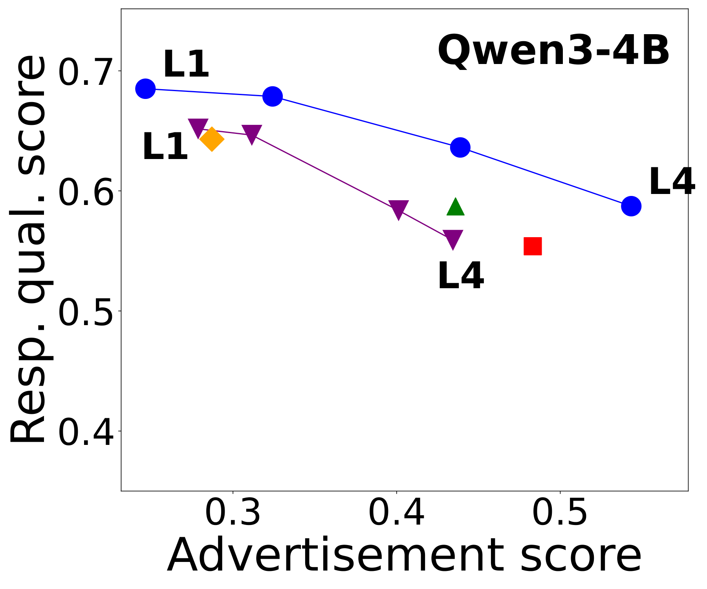
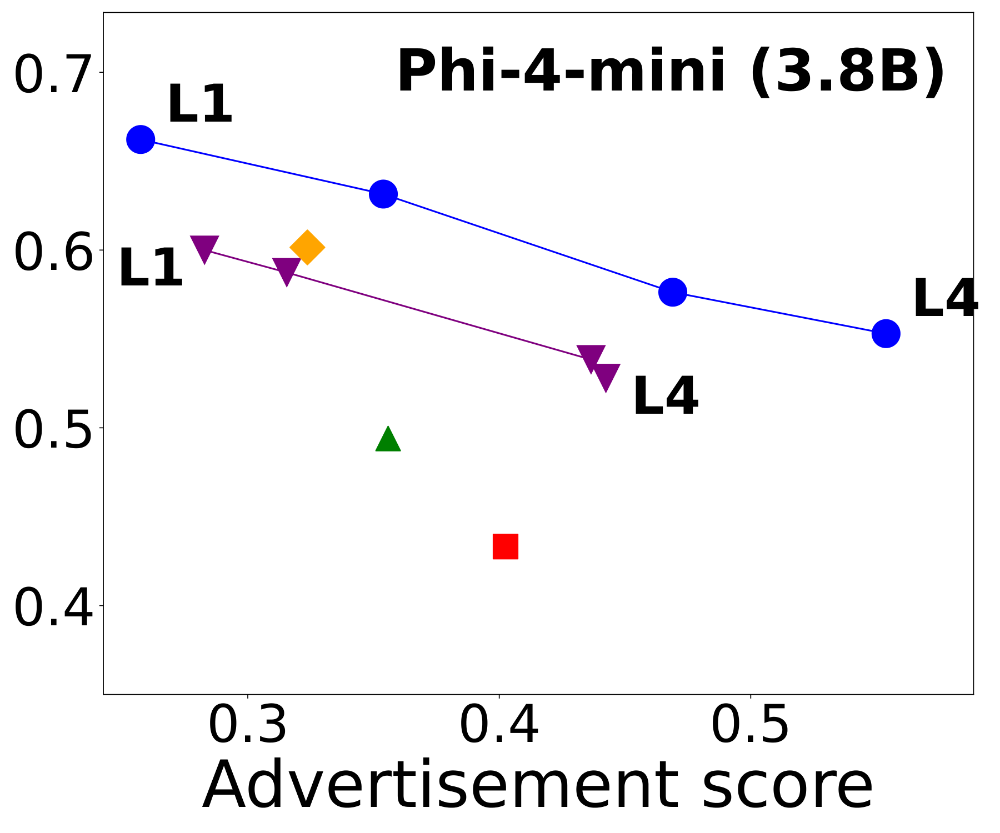
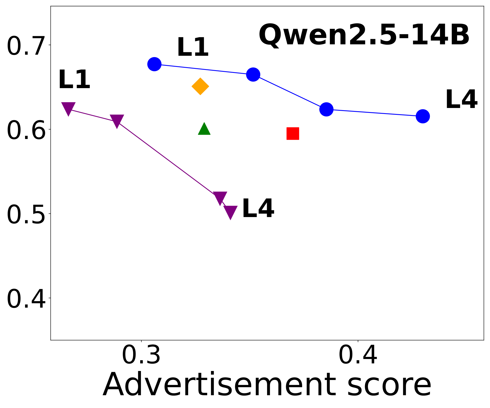
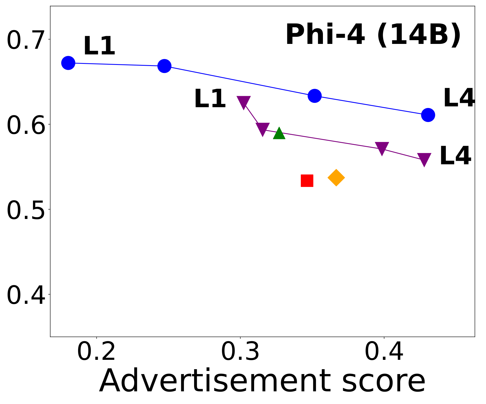
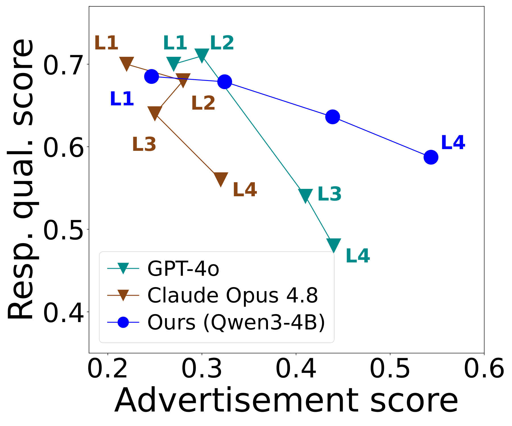

LLM services such as OpenAI, Perplexity and xAI are moving toward advertising inside generated answers. Unlike banners or sponsored links, these LLM-native ads are woven into free-form responses, which makes them less disruptive but raises two problems that existing methods leave open.
Existing approaches only inject an ad; they cannot set how prominently it appears. A provider needs that control to offer subscription tiers, honor advertiser contracts, and govern context, for example suppressing ads for an urgent medical question while giving them more room in a shopping query. Prompting a model with "subtle" or "strong" does not work reliably: intensities collapse into a narrow range, even for GPT-4o and Claude.
A native ad has no structural marker, so nothing separates the promotional sentences from the rest of the answer. Disclosure is nonetheless required by the FTC, the IAB and the EU Digital Services Act, and hidden ads undermine user trust. Labeling therefore has to be accurate and fast enough to run on every response a service serves.
Pick a user request and one of ten brands from the same topic, turn the knob, and see how AdKnob (Qwen3-4B) changes the response. Highlighted sentences are the ones AdKnob labels as advertising. Move the threshold to see how labeling changes.
All responses were generated in advance by the model from the paper (Qwen3-4B, greedy decoding, up to 500 tokens); nothing runs in your browser. A sentence is labeled as an ad when its attention-rollout attribution to the brand and ad copy tokens exceeds τ. The demo starts at τ = ; the paper's quantitative evaluation uses τ = 0.005, which favors recall.

Overview of AdKnob. Ad control tokens condition the desired ad intensity, DPO with level-dependent preference pairs aligns each token to its target intensity, and an ad-attribution loss makes attention rollout a reliable signal for labeling ads.
AdKnob adds new tokens [AD_LV_1]–[AD_LV_4] to the vocabulary and appends one
to the user request. Their embeddings start from random initialization, so they carry no pretrained meaning.
Natural-language cues such as "low" or "level 3" do carry meaning, and that meaning gets in the way: models
trained with them leak the descriptor words into the answer and degrade response quality. A token that means
nothing on its own can be bound cleanly to one intensity.
Each level n gets a uniformly spaced target intensity, and the model is fine-tuned with DPO on level-dependent preference pairs. The chosen response hits the target advertisement score while keeping response quality high. Three rejected responses each isolate one failure, so the training signal is never ambiguous:
Ad sentences are the ones that depend on the brand and ad copy in the input. AdKnob measures this dependence with attention rollout, which uses only the attention weights already computed during generation, so labeling costs no extra forward pass. Because DPO alone does not make this signal reliable, an ad-attribution loss supervises it during training with pseudo-labels from an ablation study, namely how much each generated token's probability drops when the brand and ad copy are removed from the prompt. At inference, a sentence is labeled as an ad when its average attribution exceeds a threshold τ.
Training AdKnob needs preference pairs across multiple ad intensity levels, and no such dataset existed. MI-KnobSet is the first multi-level ad intensity preference dataset for LLM-native ads, built on the Webis Generated Native Ads 2024 dataset and extended to a conversational setting.
The Webis dataset pairs short keyword queries with brands and ad-integrated responses. GPT-4o turns each keyword query into a natural user request and writes an ad copy describing the brand's key qualities, giving instances of (user request, brand, ad copy). For each training instance, GPT-4o then generates 25 candidate responses, five from each of five system prompts with increasing ad integration, from "subtle" to "maximum".
Every candidate gets two scores. The advertisement score combines how often the brand is mentioned (weighted by the sentiment of those mentions) with how closely the response conveys the ad copy, and correlates with human-perceived ad intensity at Spearman ρ = 0.91. The response quality score asks LLM judges how well the response still answers the user and how much information it keeps compared with an ad-free response, averaged over three judges to reduce bias. Preference pairs for each level are then selected by these scores (see Method).

Advertisement scores of the candidates generated with the five natural-language intensity prompts overlap heavily. Prompting alone does not produce distinct intensities, which is why AdKnob selects preference pairs by score and learns dedicated control tokens.
We evaluate AdKnob on six open LLMs from 3B to 14B against post-hoc insertion (Two-step), system-prompt integration (Prompt-based), fine-tuned ad injection (JU-NLP) and natural-language level prompts (NL-prompt).
Advertisement score (x) against response quality (y). Up and to the right is better.





AdKnob (L1–L4) spans a wide and uniform range of ad intensities that covers every baseline, while the baselines sit at a single point or a narrow range. At comparable intensity, AdKnob also keeps higher response quality.
NL-prompt applied to GPT-4o and Claude Opus 4.8, against AdKnob on Qwen3-4B.

GPT-4o collapses into effectively two levels and Claude Opus 4.8 is not even monotonic, while AdKnob spans roughly twice the intensity range with uniform spacing at comparable or higher response quality.
Sentence-level ad labeling at τ = 0.005 and labeling time per response.
| Method | Qwen3-4B | Qwen2.5-14B | ||||
|---|---|---|---|---|---|---|
| AUC | F1 | Time (ms) | AUC | F1 | Time (ms) | |
| Marker (self-tagging) | 0.58 | 0.47 | – | 0.59 | 0.36 | – |
| BERTScore | 0.68 | 0.68 | 1,785 | 0.65 | 0.51 | 1,779 |
| AttnLRP | 0.48 | 0.67 | 179 | 0.47 | 0.46 | 450 |
| Ours w/o ad-attribution loss | 0.69 | 0.62 | 3.3 | 0.74 | 0.56 | 7.3 |
| AdKnob | 0.77 | 0.76 | 3.3 | 0.79 | 0.76 | 7.3 |
AdKnob is the most accurate labeler on every model while being over 500× faster than BERTScore and 50× faster than AttnLRP. Against human-annotated labels it also reaches the highest AUC (0.86) with high recall, which matters for disclosure: a missed ad is the costly error.
Amazon Mechanical Turk studies on perceived intensity, preference and ad labels.
| Level | Ad intensity | Resp. quality |
|---|---|---|
| L1 | 1.30 | 3.58 |
| L2 | 2.25 | 3.51 |
| L3 | 3.21 | 3.25 |
| L4 | 3.66 | 3.10 |
| AdKnob vs. | User pref. | Click pref. |
|---|---|---|
| Two-step | 89.6% | 79.2% |
| Prompt-based | 81.3% | 77.1% |
| JU-NLP | 79.2% | 79.8% |
| NL-prompt | 75.0% | 75.5% |
Perceived ad intensity rises monotonically from L1 to L4 with every adjacent step significant (p < 0.001), while perceived quality stays high. People prefer AdKnob's responses and are more willing to click its ads, most often because its ads feel non-intrusive and relevant.
@inproceedings{kim2026adknob,
title={AdKnob: Ad Intensity Control and Labeling for LLM-Native Advertising},
author={Kim, Woo Jae and Keum, Seongho and Jeon, Joonsung and Ha, Suhyeon and Son, Sooel and Yoon, Sung-eui},
booktitle={Advances in Neural Information Processing Systems (NeurIPS)},
year={2026}
}